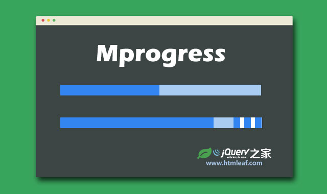
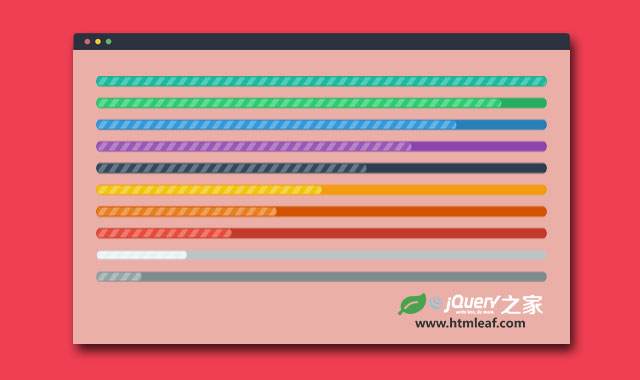

jQuery简单实用的轻量级进度条插件
jQuery plugin that allows you to display an animated horizontal or vertical progress meter
jQuery之家
返回下载页
如果你喜欢这个插件，那么你可能也喜欢:

纯js和CSS3谷歌Material Design样式进度条插件

jQuery炫酷时尚彩色条纹进度条插件